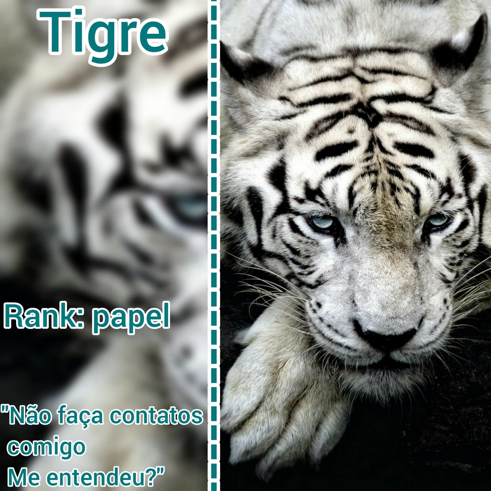
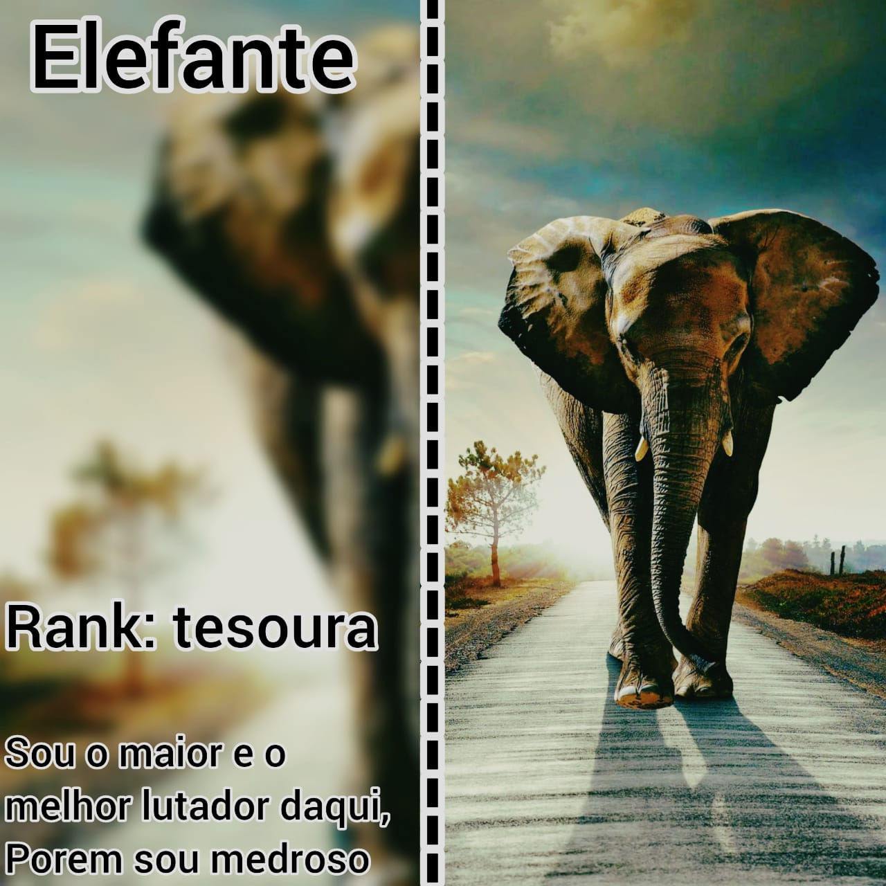
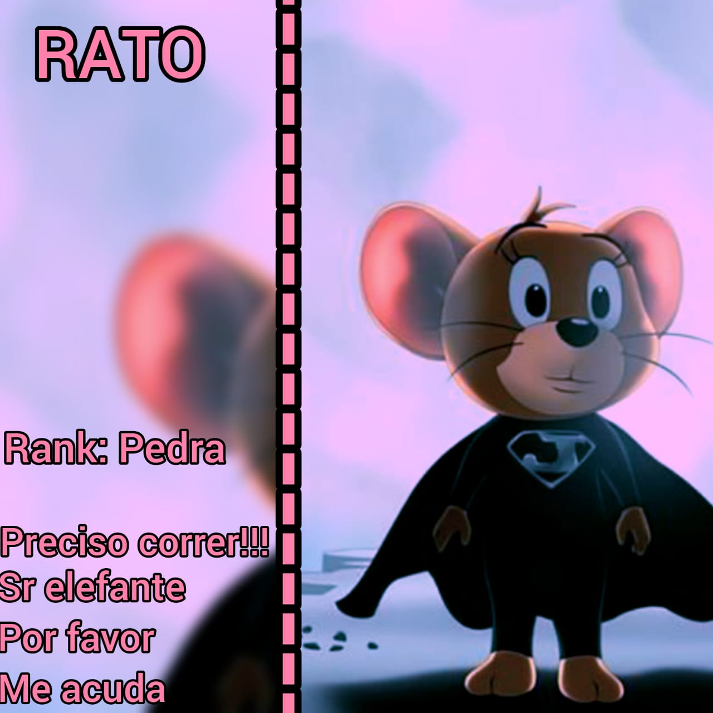

Como Jogar
O jogo é constituido por 3 Cards, Sendo eles representados por animais. Cada animal foi definido por ranks com base no jogo pedra, papel e tesoura. Os jogadores deverão escolher um Card e tacar ao mesmo tempo, a vitória vai para o jogar que tacou o Card que ganha com base no rank. O jogo não é totalmente baseado na cadeia alimentar pois tem uma lógica meio diferente, mas ainda sim tem um pouco de noção baseada nela.
Cards
Assim como foi dito, o jogo é composto por 3 Cards e elas são:
|  | Tigre: Um animal extremamente forte e agil, mas será que é tudo isso mesmo? "Não faça contatos comigo, me entendeu?" Animal: Tigre Rank: Papel |
Elefante: Um animal extremamente grande e forte e imbativel, mas será que é mesmo? "" Animal: Elefante Rank: Tesoura |  |
|  | Rato: Muito pequeno e indefeso, mas será que este pequeno rato realmente está perdido entre 2 grandes animais? Animal: Rato Rank: Pedra |
Requisitos
- Material: Cards
- Jogadores: 2